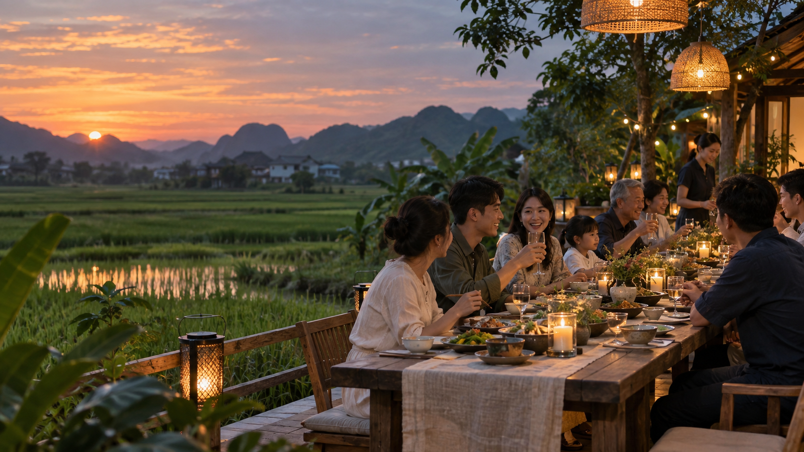
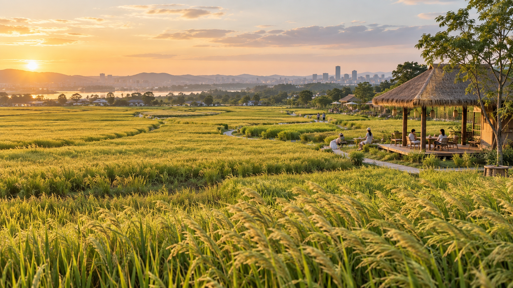
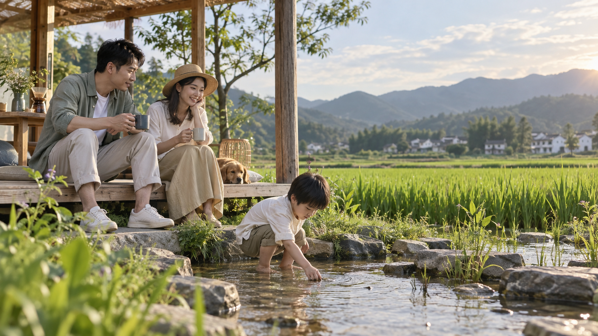
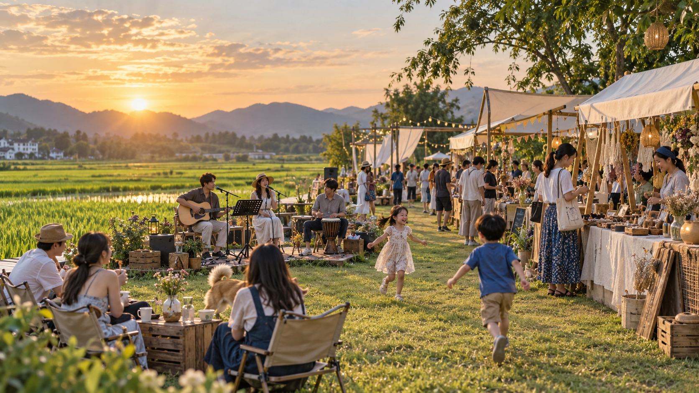
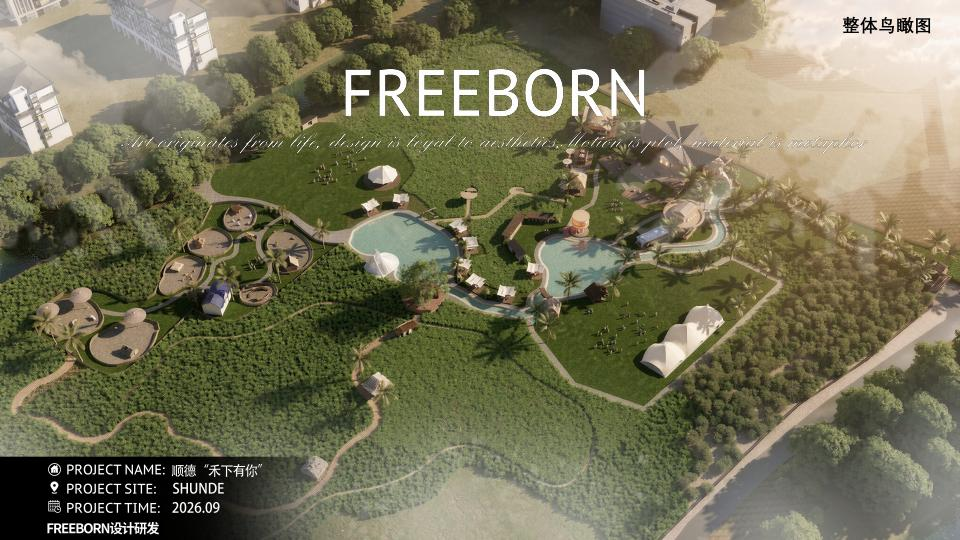

01
在禾下吃饭
咖啡、窑烤、稻田餐厅和长桌，把普通聚餐放进有风、有光、有天色的场景里。
咖啡 · 窑烤 · 晚餐 · 节气宴
设计效果图，最终以实际建成为准
在城市不远处，留下一片可以吃饭、玩耍、见面和看日落的田野。
禾下有风不只提供一次到访。我们希望它成为周末可以反复回来、陪伴季节变化的生活去处。
从下午到日落，把一天过到田野里。

咖啡、窑烤、稻田餐厅和长桌，把普通聚餐放进有风、有光、有天色的场景里。
咖啡 · 窑烤 · 晚餐 · 节气宴
动物、稻田、抓鱼和自然课堂，让孩子有事可做，也让大人愿意多待一会儿。

草坪、市集、音乐、电影和水边晚风，给每一次见面一个具体理由。
不是赶着完成项目，而是在田野里慢慢度过半天。

整体鸟瞰 · 设计效果图开放建筑、木材、藤编、水与光影，共同构成轻松的度假感。空间不会复制某种异域风格，而是从顺德真实的田野出发。
官网将随着项目推进持续更新。
KEEP IN TOUCH
项目正在设计阶段。关注入口与商务联系方式确认后，将在这里开放。